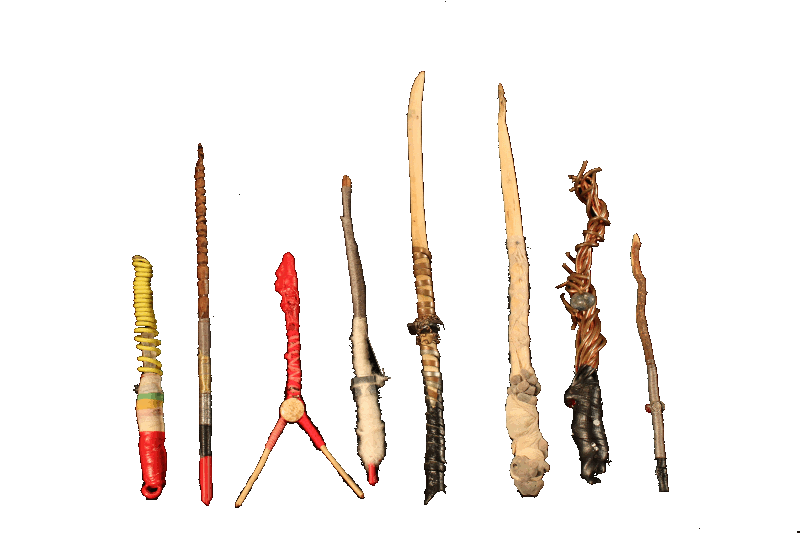
////// What do you use a wand for? //////////////////
|
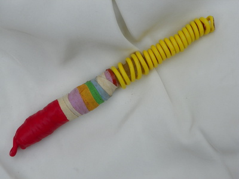 Wand 1 | 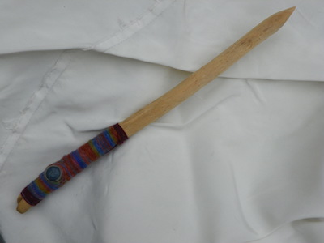 Wand 2 | 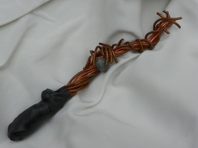 Wand 3 |
| 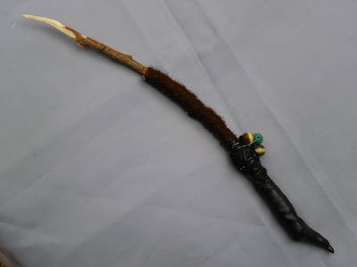 Wand 4 | 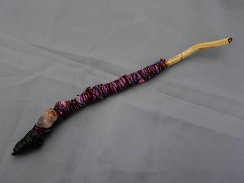 Wand 6 | 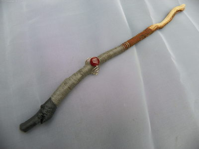 Wand 7 |
| 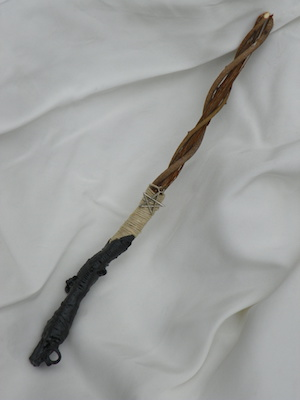 Wand 20 | 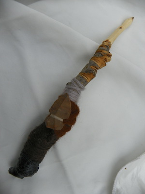 Wand 9 | 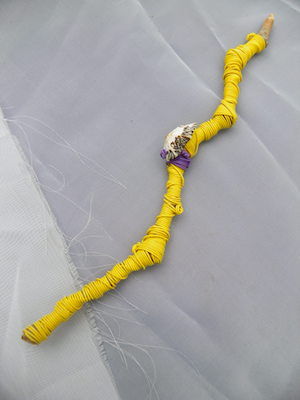 Wand 18 |
| 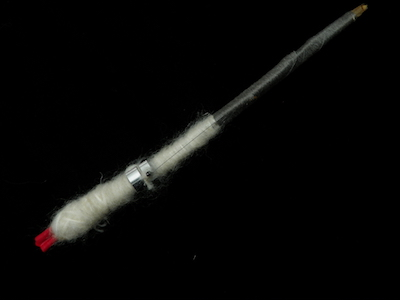 Wand 16 | 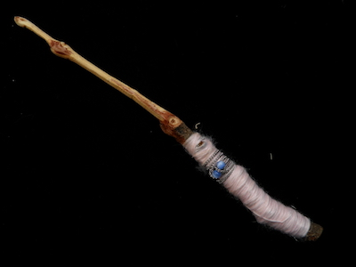 Wand 19 | 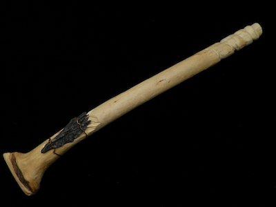 Wand 15 |
| 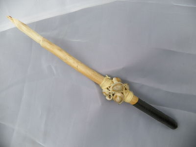 Wand 17 | 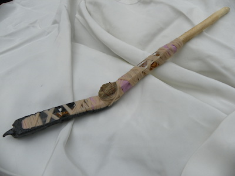 Wand 12 | 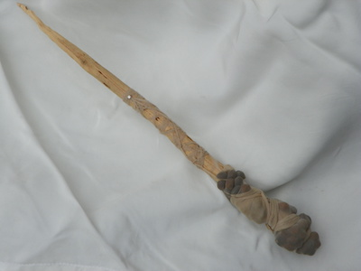 Wand 21 |
| 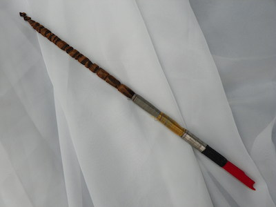 Wand 22 | 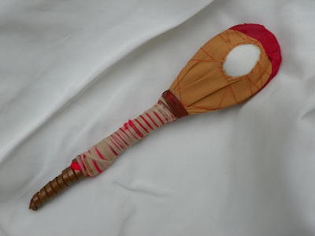 Rattle | 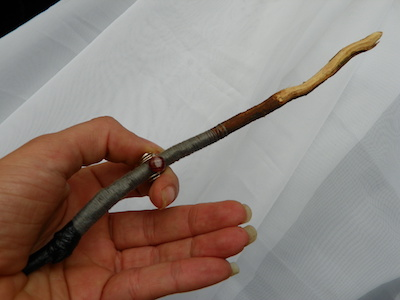 Wand Use |